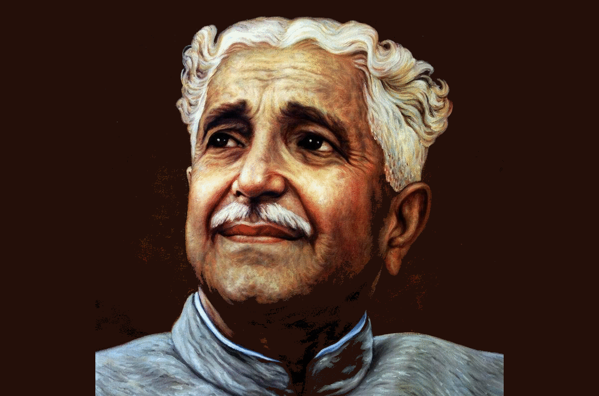

Kuvempu
Kuppali Venkatappa Puttappa - A novelist, poet, playwright, critic and thinker.

Below is the timeline and most important works of Kuvempu
Timeline
1904 - Kuvempu was born in Hirekodige, a village in Chikmagalur district of the erstwhile Kingdom of Mysore(now in Karnataka)
1929 - moved to Mysore for further education at the Wesleyan High School. Thereafter, he pursued college studies at the Maharaja College of Mysore and graduated in 1929, majoring in Kannada.
1937 - Kuvempu married Hemavathi.
1936 - He worked as an assistant professor in the Central college, Bangalore
1946 - He re-joined Maharaja's college in Mysore as a professor
1955 - Became the principal of the Maharaja's college
1956 - He was selected as the Vice-Chancellor of Mysore University
Notable Works
1904 - Kuvempu was born in Hirekodige, a village in Chikmagalur district of the erstwhile Kingdom of Mysore(now in Karnataka)
1929 - moved to Mysore for further education at the Wesleyan High School. Thereafter, he pursued college studies at the Maharaja College of Mysore and graduated in 1929, majoring in Kannada.
1937 - Kuvempu married Hemavathi.
1936 - He worked as an assistant professor in the Central college, Bangalore
1946 - He re-joined Maharaja's college in Mysore as a professor
1955 - Became the principal of the Maharaja's college
1956 - He was selected as the Vice-Chancellor of Mysore University